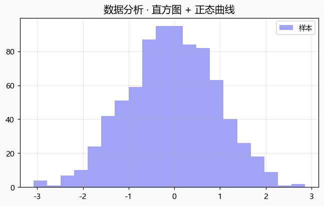

点击放大查看
面向学生和研究者的本地桌面软件 —— 公式计算、矩阵代数、微积分深化、概率统计、绘图可视化、数据分析、 时间序列、机器学习、AI 助手。无需联网，数据永不上传。
Made by zoilzo & Claude · 问题反馈： 17588853057@163.com
%APPDATA%\MatLite，
不会发送到任何服务器。
从高中数学到研究生科研，覆盖数学与统计最常见场景
表达式求值 · 符号求导 · 不定/定积分 · 解方程(组) · 极限计算 · 支持自然语法输入
行列式 · 逆矩阵 · 特征值与特征向量 · 矩阵分解 · 线性方程组的可视化求解
非线性方程求根 · 数值积分 · 插值与拟合 · 常微分方程数值解 · 高精度计算
多元函数偏导数 · 重积分 · 曲线/曲面积分 · 级数展开与收敛判断
复数运算 · 解析函数可视化 · 留数定理 · 共形映射 · 拉普拉斯变换
常见分布 PDF/CDF · 随机抽样 · 蒙特卡洛模拟 · 大数定律与中心极限定理演示
2D 函数曲线 · 3D 曲面图 · 散点/折线/柱状/直方图 · 支持中文标注 · 图片导出
Excel/CSV 导入 · 描述统计 · 正态性检验 · t 检验 · 方差分析 · 回归分析 · 一键导出 Word 报告
趋势分解 · 季节性分析 · ARIMA 建模 · 自相关图 · 平稳性检验 · 预测
K-Means · 线性/逻辑回归 · 决策树 · SVM · PCA 降维 · 模型评估与可视化
接入本地 Ollama · 自动拆解任务 · 调用 36+ 内置工具 · 图文内嵌展示 · 全程离线
图片上传 · 本地视觉模型识别数学题目 · 自动调用对应模块求解 · 图片不离开本机
自动保存操作历史 · 按模块检索 · 游客模式与登录模式双支持
浅色/深色主题 · 公告与更新提醒 · SMTP 反馈配置 · 账号管理 · 全面自定义
模块使用说明 · FAQ · 版本公告 · 更新日志 · 一键邮件反馈给开发者
一目了然的操作界面

两种方式任选，均无需管理员权限
适合大多数用户，带卸载入口
MatLiteSetup.exe默认路径：%LOCALAPPDATA%\Programs\MatLite
适合 U 盘携带或临时使用
MatLite-便携版.zipMatLite.exe 即开即用%APPDATA%\MatLite%APPDATA%\MatLite 即可。
两者都使用本地大模型（Ollama），图片与对话内容不离开你的电脑。
ollama serveqwen3-vl:8b）历史版本归档，方便回退到旧版
| 版本 | 发布日期 | 安装包 | 便携版 | 亮点 |
|---|---|---|---|---|
| 最新 v1.8.0 | 2026-09-26 | 下载 ~113.7 MB | 下载 ~171.0 MB | AI 增强 · 59 内置工具 · 多模型协作 |
| v1.2.0 | 2026-09-19 | 下载 ~81 MB | 下载 ~124 MB | AI 智能工作流 · 36 内置工具 · 对话图片内嵌 |
| v1.1.1 | 2026-09-19 | 下载 ~81 MB | 下载 ~124 MB | 设置页重写 · SMTP 反馈 · 修复文字重叠 |
| v1.1.0 | 2026-09-18 | 下载 ~81 MB | 下载 ~124 MB | 复变函数 · 时间序列 · 机器学习 · 拍照识题 |
| v1.0.0 | 2026-09-18 | 下载 ~73 MB | 下载 ~112 MB | 首个正式发布 · 基础功能全齐 |
你可能想知道的事
完全免费。个人使用、学习、作业、教学演示、个人研究均不需要付费。商业用途或再分发需取得开发者书面许可。
全部计算、账号、历史、AI 对话都在本机完成，不需要联网。只有以下情况会少量联网：
所有用户数据保存在 %APPDATA%\MatLite，不会上传到任何服务器。
目前支持 Windows 10/11 64-bit 及 Windows Server 2016+。macOS 和 Linux 版本暂不支持。
安装包（MatLiteSetup.exe）提供完整的安装向导：可创建桌面/开始菜单快捷方式、有卸载入口、支持开机自启等。推荐大多数用户使用。
便携版（MatLite-便携版.zip）解压即用，适合放入 U 盘随身携带，但无卸载入口和快捷方式。
需要安装 Ollama 并下载一个本地模型（如 qwen3-vl:8b）。推荐 8 GB 以上内存。AI 功能完全可选，不启用也不影响其他模块的使用。
软件内点击「意见反馈」可通过 SMTP 直发邮件；也可直接发送邮件至 17588853057@163.com。
需要。商业用途或再分发须事先取得开发者书面许可。禁止用于非法用途、商业竞品、冒名官方或捆绑恶意软件后分发。
联系邮箱：17588853057@163.com
✅ 个人使用 · 完全免费
可用于学习、作业、教学演示、个人研究。无需付费。
🔒 数据隐私 · 本机存储
账号、历史、设置、AI 对话均保存在本机 %APPDATA%\MatLite，绝不上传。
💼 商用需授权
商业用途或再分发须取得开发者书面许可。
⚖️ 按原样提供
计算结果与 AI 输出仅供参考，用户须自行核验重要结果。
安装或使用即视为同意 完整安装条款 / 许可协议